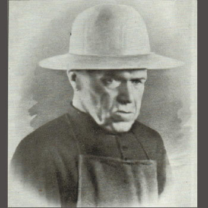

Isusovački blaženici
Isusovac · Svećenik · Misionar
Bl. Ivan Beyzym
1850.–1912.
Poljski isusovac na Madagaskaru živio je među oboljelima od gube, pružao im njegu i pokrenuo izgradnju bolnice, braneći njihovo ljudsko dostojanstvo svakoga dana.
Tekst je preveden i prilagođen uz pomoć umjetne inteligencije.

Izvor slike
- Spomendan
- 2. listopada
- Zaštitništvo
- Nije navedeno u izvoru
- Životni vijek
- 1850.–1912.
- Ulazak u Družbu
- 10. prosinca 1872.
- Svećeničko ređenje
- 1881.
- Smrt
- 2. listopada 1912., Marana
U kalendaru zbirke koristi se dan smrti. Taj datum nije zasebna potvrda liturgijskoga spomendana.
Životopis
Ivan Beyzym rođen je u Voliniji, na području današnje Ukrajine. Nakon ulaska u Družbu Isusovu školovao se u Krakovu i postao svećenik. Radio je u školama, predavao jezike i brinuo se za školsku ambulantu. Godine 1898. ostvario je želju za služenjem oboljelima od gube te otišao na Madagaskar.
U Ambahivuraki je odlučio živjeti među bolesnicima izloženima gladi i društvenoj odbačenosti. Njegovao je rane, pribavljao hranu i vodu te poboljšavao smještaj. Uvidjevši potrebu za trajnom zdravstvenom skrbi, prikupljao je sredstva za bolnicu u Marani. Njegov je apostolat spajao medicinsku pomoć, duhovnu blizinu i obnovu dostojanstva ljudi koje je društvo potisnulo na rub.
Tekst je preveden i prilagođen uz pomoć umjetne inteligencije.